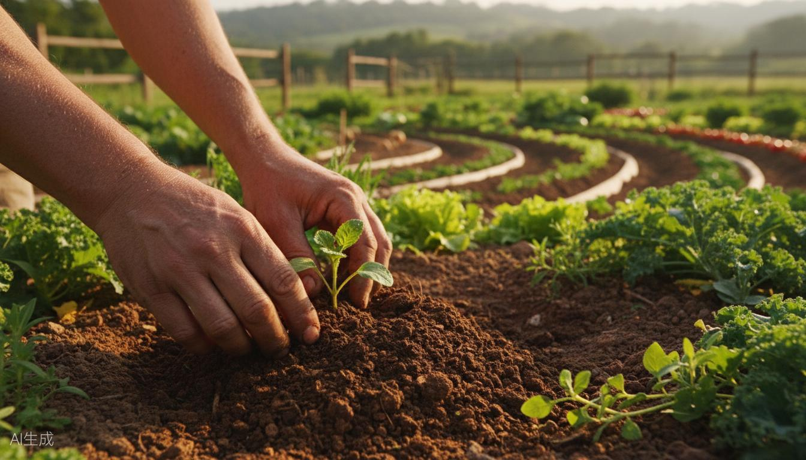

Non sono un guru.
Sono un compagno di cordata.
Non ti accompagno per cambiarti. Ti accompagno a fare esperienza diretta, nel corpo e nei gesti, di un modo diverso di stare.

Prima
Il mondo corporate
Svizzera, Londra, Australia. Ex-informatico, poi UX designer. Codice, riunioni, notifiche. Un mondo stimolante, velocissimo, fatto di schermi.
Due anni fuori
Il viaggio
Ho lasciato tutto per cercare qualcosa di più vero. Furgone tra i boschi, notti sotto le stelle, risvegli col sole.
La terra
Agricoltura
Agricoltura e permacultura. Ho cercato radici. Ho imparato a osservare i cicli naturali e a rispettare i tempi, invece di forzarli.
La comunità
Ecovillaggi
Ecovillaggi e convivenza. Ho scoperto che esistono modi diversi di organizzarsi, collaborare, prendere decisioni.
Oggi
Il bosco è il mio ufficio
Guida ambientale, formatore esperienziale outdoor, istruttore Wildfulness. Tra agricoltura, bosco e facilitazione di gruppi.
Per anni ho funzionato. Non ho vissuto.
Tra codice, design e riunioni, in Svizzera, Londra e Australia. Un mondo stimolante e velocissimo, fatto di schermi e notifiche.
A un certo punto mi sono accorto che vivevo molto e sentivo poco. Rispondevo alle mail alle 23. La domenica correvo nella metro senza un vero motivo. Respiravo a metà.
Così ho lasciato tutto e sono partito per due anni in furgone. Non per fuggire, ma per togliere strati: rallentare, semplificare, tornare a un contatto diretto con la vita.


Ho cercato radici nell'agricoltura e nella permacultura. Avevo riparo, acqua, cibo, fuoco. Eppure mi sentivo ancora in sopravvivenza. Lì ho capito: il problema non era fuori. Era come stavo dentro.
Questa traiettoria è la mia credibilità. Nessun certificato la sostituisce.
"Oggi il bosco è il mio ufficio. Non sono un maestro: sono un compagno di cordata. Ti accompagno a fare un'esperienza che il corpo non dimentica."
Una formazione che attraversa mondi diversi
Guida Ambientale
Esperto in conduzione di gruppi in ambiente naturale, interpretazione del paesaggio e didattica outdoor.
Formatore Esperienziale Outdoor
Progettazione e conduzione di esperienze formative in natura, combinando avventura e consapevolezza.
Operatore di Sopravvivenza
Competenze in tecniche di bushcraft, accensione del fuoco, orientamento, costruzione ripari.
Istruttore Wildfulness
Pratiche di connessione con la natura per il benessere psicofisico attraverso l'esperienza diretta.
Dallo schermo alla terra
Agricoltura
La permacultura mi ha insegnato a pensare in sistema. A osservare prima di agire. A rispettare i tempi naturali invece di forzarli.
Avventure nei boschi
Mesi in furgone tra boschi e montagne. Notti sotto le stelle. Svegliarsi col sole. La natura come casa, non come sfondo.
Ecovillaggi
Vivere in comunità intenzionale mi ha mostrato che esistono modi diversi di organizzarsi, collaborare, prendere decisioni, abitare il mondo.
Tre cose che ho imparato
Modalità sopravvivenza
Vivevo nel futuro, per obiettivi. Cercavo di prendere il più possibile, perché temevo che non bastasse. Poi ho capito: la sopravvivenza non è fuori, è dentro. Non serve un weekend in natura per fuggire. Serve tornare a sentire.
L'esperienza batte la teoria
Ho letto centinaia di libri senza ricordarne il contenuto. Ho imparato davvero solo quando ho messo le mani. L'esperienza diretta lascia tracce che la teoria non lascia. Per questo nelle mie esperienze non ci sono lezioni frontali: c'è il fare, e poi il guardare.
Abitare il sentiero
Non si tratta di arrivare da qualche parte. Si tratta di abitare il sentiero. Ogni passo è il punto d'arrivo. Questo è il cuore di tutto: non una meta da raggiungere, ma un modo di camminare.
Conosciamoci
Se vuoi capire se questa strada fa per te, scrivimi. Nessuna promessa di trasformazione, nessun corso da venderti. Solo una conversazione, per capire insieme.